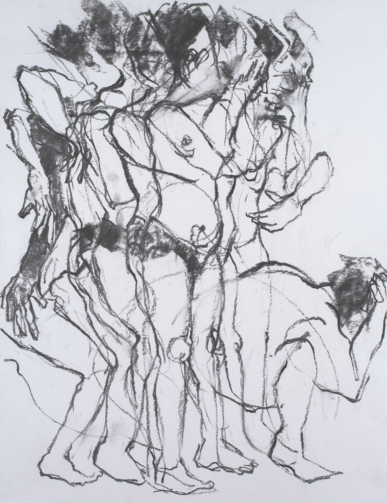
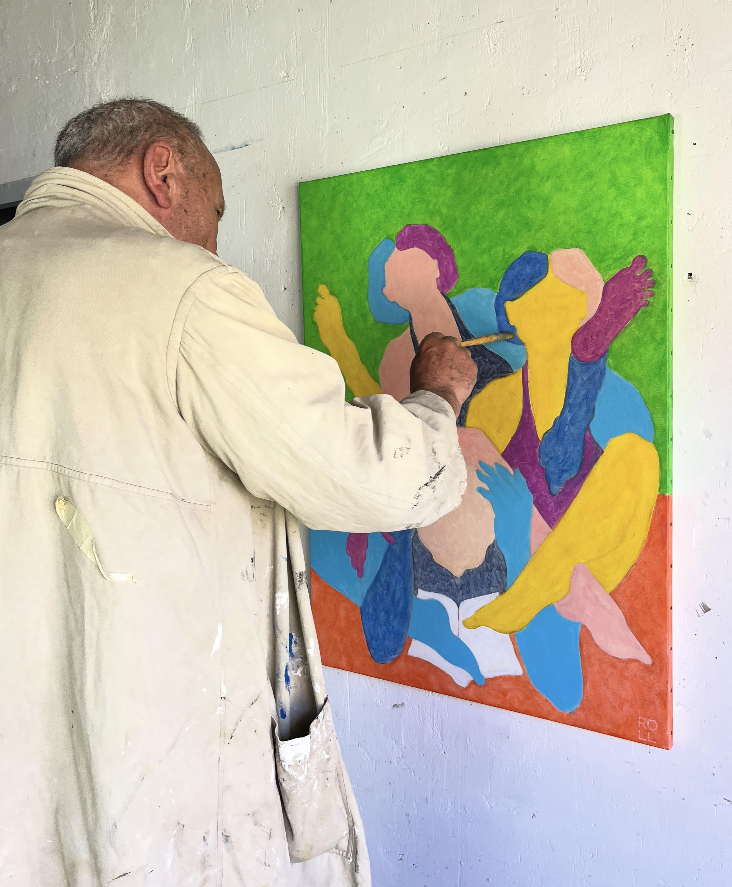

.jpeg)
Collections
Série "ENSEMBLE" Abstraction figurative.
11 œuvres →
"INSTANT" fusain.
9 œuvres →
Autres séries.
3 œuvres →


Expositions
Voir les expositions →


Comme souvent, peindre et dessiner sont depuis l'enfance un jeu et un moyen spontané, naturel, évident de représenter les choses, mais aussi d'exprimer des ressentis, des émotions.
Après avoir fréquenté les ateliers de peinture et de dessin dans différentes écoles d'art à Bruxelles, il comprend petit à petit ce que signifie donner une existence physique à la pensée, et aussi le sens de la quête (infinie) d'un alphabet pictural entre ligne, surface et couleur. (L'éternelle question…)
L'existence propre d'une ligne, celle d'une couleur comme véritable objet du tableau, plutôt que « l'imitation » de quoi que ce soit.
Né à Bruxelles, il y fréquente les ateliers de l'ACA, du CAD, et durant trois ans la Roc Académie. Il est diplômé de l'École des Arts de la Ville de Bruxelles.
Mon travail pictural s'inscrit dans un espace de tension entre image et pensée.
La figure y est envisagée non comme sujet de représentation, mais comme opérateur conceptuel. Les peintures interrogent les mécanismes de reconnaissance visuelle qui précèdent l'interprétation consciente. Chaque image est construite à partir d'un protocole volontairement simple, parfois contraint. La composition agit comme un dispositif perceptif plutôt que comme une structure narrative. La figure humaine y est fragmentée, déplacée ou suspendue, générant une instabilité du regard. Entre présence et abstraction, la peinture ralentit la lecture de l'image. Le spectateur est ainsi invité à reconsidérer ses modes de perception. La peinture devient alors un acte de perception critique.
Genève, Suisse
Pour toute demande d'acquisition, de prêt ou d'exposition, n'hésitez pas à écrire. Je réponds personnellement à chaque message.